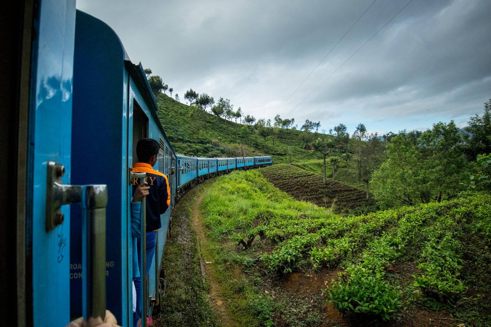
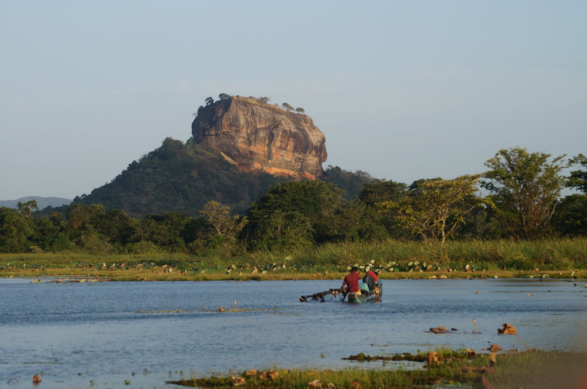
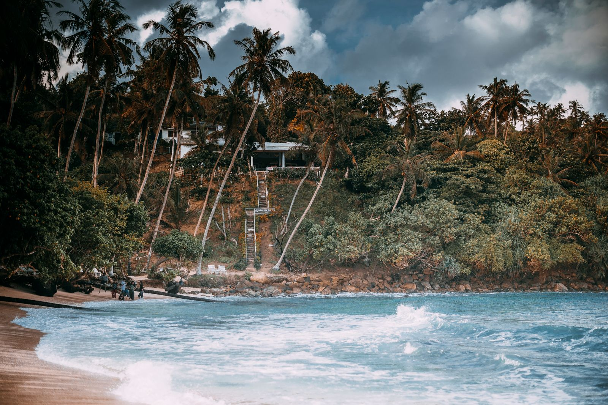
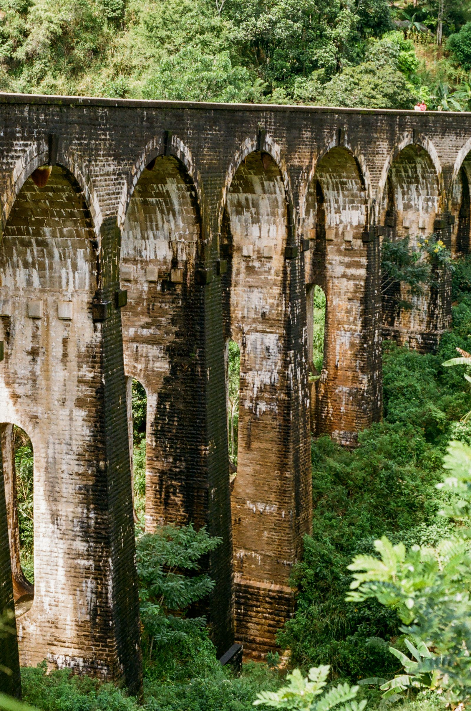
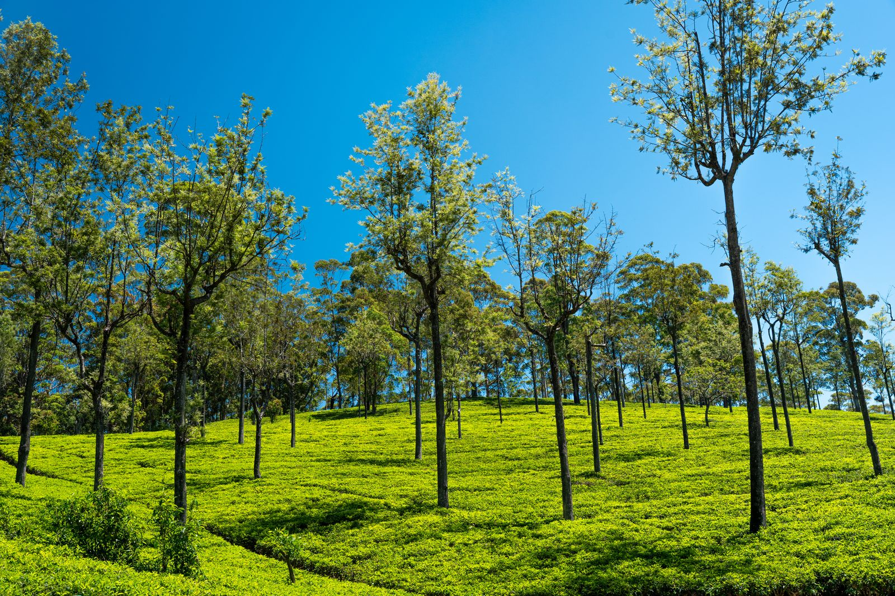
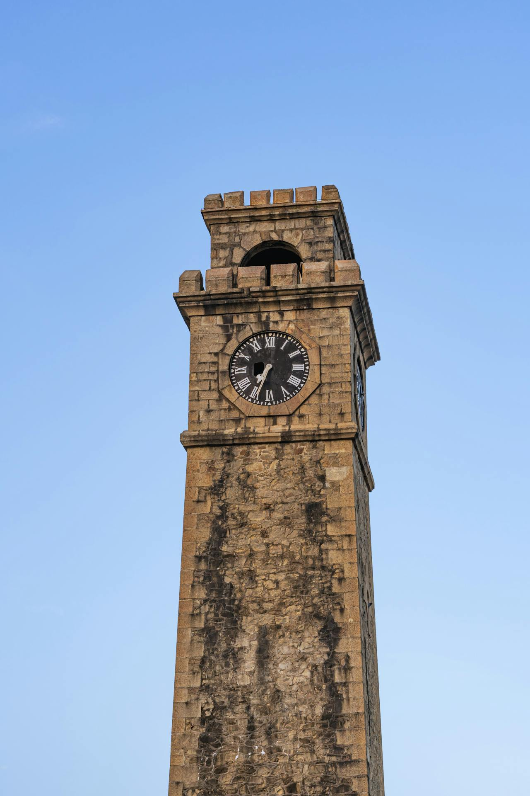

017 days · 6 nights

Dreaming of golden beaches, ancient wonders, misty tea plantations and thrilling wildlife? Ranweli Tours UK creates authentic, private holidays with seamless support from London to Kandy.
Ranweli Tours is a leading inbound tour operator based in Kandy, Sri Lanka, with a dedicated UK branch to serve British travellers better.
Our private, customised journeys showcase UNESCO sites, cultural heritage, beautiful landscapes and warm hospitality — with transparent pricing, GBP-friendly booking and full support from our London team.
Meet Ranweli Tours →Each package is private, fully customisable and designed with British travellers in mind.





Every Ranweli journey is private: your own comfortable vehicle, dedicated English-speaking driver-guide and an itinerary flexible enough to follow your curiosity.
From your first enquiry to your safe return home, we make your Sri Lanka holiday seamless, comfortable and memorable.
A London office, local UK phone and easy communication in your time zone.
Your own vehicle, English-speaking driver-guide and a flexible itinerary.
A Kandy-based team with deep insight into authentic Sri Lanka experiences.
Competitive pricing, clear inclusions and no hidden costs.
Modern vehicles, handpicked hotels and 24/7 support throughout your holiday.
Meaningful experiences that support local communities and conservation.
★★★★★“Absolutely outstanding service from start to finish. Our driver-guide was knowledgeable and caring — made our Sri Lanka holiday perfect.”
★★★★★“Best decision to book with Ranweli. Private, flexible, and every detail taken care of. Highly recommend for Sri Lanka tours from UK.”
Tell our UK team what you’re dreaming of and we’ll create a private journey around your dates, pace and interests.